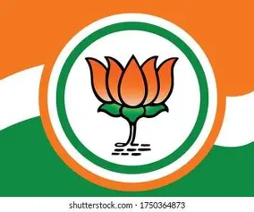
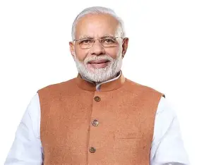
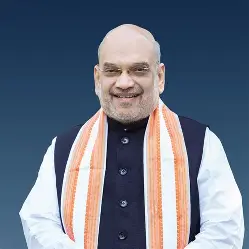

India's ruling party and one of the largest political parties in the world by membership. It promotes Hindu nationalism, economic development, and a strong foreign policy.
Founded: 1980 Ideology: Right-wing Symbol: Lotus HQ: New DelhiBJP was founded on 6 April 1980 by A.B. Vajpayee and L.K. Advani after the Janata Party split. It emerged from the Bharatiya Jana Sangh. The party rose to national prominence in the 1990s and first formed the government in 1999 under Vajpayee. In 2014, Narendra Modi led the party to a historic majority, and the party won again in 2019 with an even larger mandate.
BJP follows Hindu nationalism (Hindutva), social conservatism, and economic nationalism. Key pillars include national security, "Make in India," digital India, and cultural unity. The party advocates strong governance and a self-reliant (Atmanirbhar) India.

